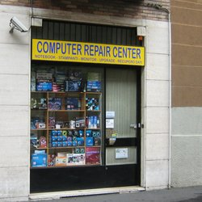
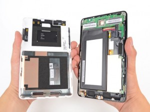

Dove si trova
Computech srl. si trova in via Luigi Pulci 14, Nella zona Bicocca. fanno le riparazione computer, palmari, accessori per notebook e palmari.
aperto dal lunedi fino venerdi dalle 9:30 alle 13:00 e 14:30 alle 19:00
il titolare dell"azienda e Francesco B"Angelo
Telefono: 026428258 | Fax: 0236554777 | Partita IVA: 11628220151 | REA: Categoria: Macchine Ufficio - Noleggio, Commercio e Riparazione GeoCategoria: Macchine Ufficio - Noleggio, Commercio e Riparazione Milano
Assistenza computer.Specializzati nella riparazione di notebook a livello di scheda madre, perchè sostituire la scheda madre/scheda video quando è possibile ripararli, abbiamo un esperienza di oltre 15 anni in questa tipologia di riparazioni, reflow, reball, short locator, forse sono termini che non vi dicono nulla ma sono alcune delle lavorazioni che siamo in grado di eseguire nel nostro attrezzato laboratorio. Recupero dati informatici da Hard disk con problemi sia di tipo logico che di danni fisici', in questo caso vengono trattati nella nostra camera bianca che è conforme alle normative ISO4 Recupero Dati da dispositivi Flash quali possono essere pen drive memorie sd, uSd, MS, etc. I servizi che offriamo sono tutti eseguiti nel nostro laboratorio
Cosa ho fatto di piu bello
la cosa piu bello che ho fatto e di riparare ipad e cellulari che avevano spesso questi problemi:
Touch Fail,Display Fail,LCD Fail in devi solo cambiare lo schermo dai donatori
(sono tablet che hanno la parte solftware dannegiata).
Batteria Fail bastava solo cambiare la batteria.
Webcam Fail dovevi cambiare il pezzo di webcam con un altro pezzo di webcam buono.
Riparare i Dc Jack
altre cose che cose che mie piaciuto
controllo USB dei tablet e cellulari.
testare i cellulari e tablet
contare i tablet pronti
flashare i tablet
Cosa ho fatto di meno bello
la cosa che ho fatto di meno bello sono:
le pulizie che ogni venerdi o altri giorni quando era troppo sporco,
non mi piaceva perchè perdevi tempo a pulire e raccogliere lo sporco
La pausa perdevi aspettavi una ora e mezza fuori morto di fame.
pacchettare le scatole
buttare le batterie scarse
contare i tablet pronti
contare le batterie buone
mettere in carica i tablet
controllare il 3G

Cosa avrei voluto fare
avrei voluto impare di piu sulle riparazioni sul computer,televisioni e notebook